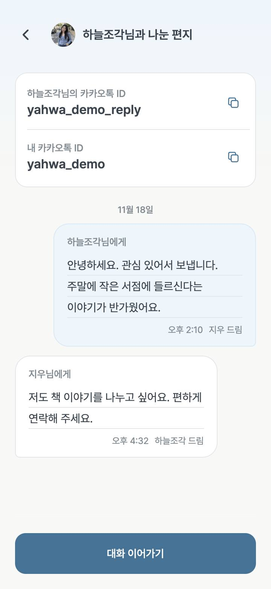
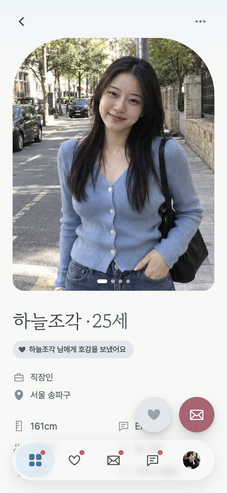

연결된 편지 · 헤더에 프로필
- 헤더: 뒤로 ‹ 옆에 사진 32 + "하늘조각님과 나눈 편지"(16 SemiBold). 사진과 제목을 함께 누르면 프로필로 가요(터치 높이 44).
- 프로필에서 뒤로: 다시 이 편지 화면으로 돌아와요.
- 바로 아래 서로의 ID: 라벨 위 · ID 아래 두 줄, 오른쪽 복사 아이콘.
- 편지: A 그대로 — 내 편지 연한 하늘 · 오른쪽, 상대 편지 흰색 · 왼쪽, Pretendard 15 / 28.

새로편지 화면
사진 · 제목 누름 →
← 뒤로

그대로하늘조각 프로필